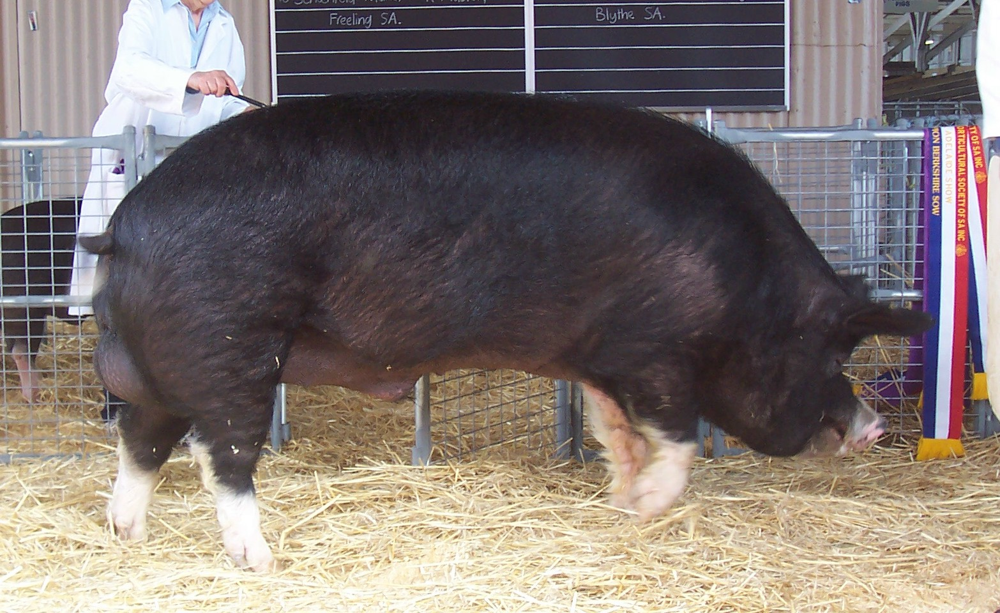

In het algemeen geld dat hoe meer vleeskwalieteit het varken heeft, hoe minder goede moedereigenshappen voor hun jongen. Dit geld ook andersom. Als je varkens kruist (voor bv. betere moedereigenschappen), moet je er rekening mee houden dat de vleeskwalieteit van het gekruiste ras minder is.
Hieronder vind je enkele varkensrassen alfabetisch gesorteerd.

Berkshire
Het Berkshire varken word vooral gekweekt in het Verenigd Koninkrijk. Deze varkens zijn volledig zwart met witte poten. Ze hebben een zeer goede vlees kwaliteit en wordt daarom gecommercialiseerd als Duke of Berkshire.
Dit ras is van kop tot staart zeer kort. Dit leid tot minder tepels en dus minder biggen per zeug.